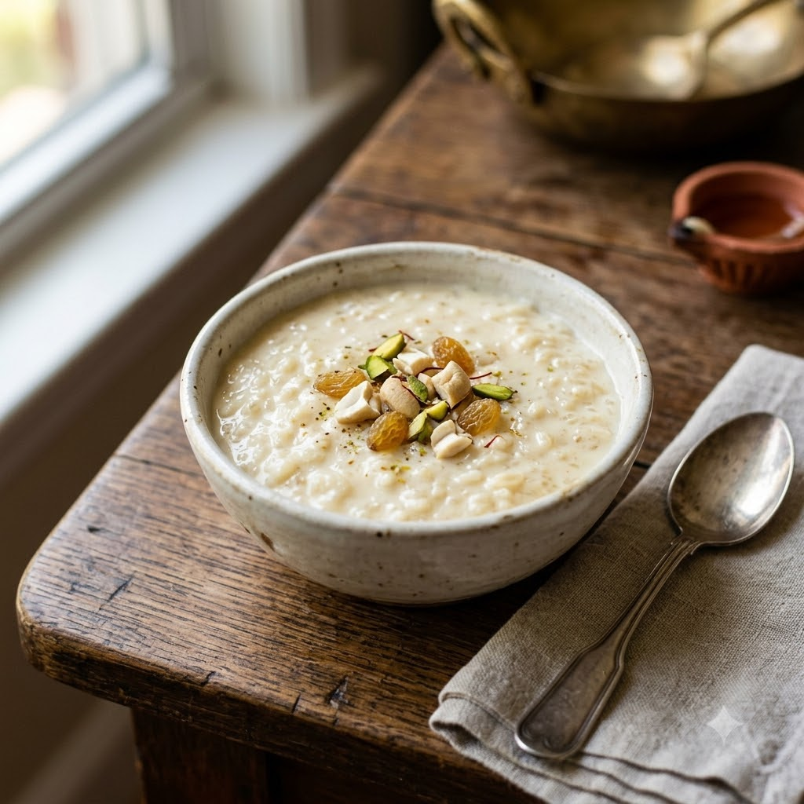

Payesh (Bengali Rice Pudding)

Payesh (Bengali Rice Pudding)
Chef Magic – Boil Auto 24 min — Serves 4
Vegetarian • Bengali
🧑🍳 Chef Magic🍽 Serves 4
Ingredients
- 150g paneer, crumbled
- 4 cups milk
- 3 tbsp sugar
- 1 tbsp rice, soaked 20 min
- 1/4 tsp cardamom powder (elaichi powder)
- A few saffron (kesar) strands
- Chopped pistachios to garnish
Method
1Add milk and soaked rice to the jar; select Boil (Speed 1–2, 100°C) and cook for 15 minutes until the rice is soft and the milk has reduced slightly.
2Add sugar and crumbled paneer; continue on Boil (Speed 1–2, 100°C) for 6 minutes, stirring occasionally, until slightly thickened.
3Stir in cardamom powder and saffron; cool slightly.
4Garnish with pistachios and serve warm or chilled.
Tip: The payesh thickens further as it cools, so take it off a little runnier than you want the final texture.